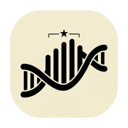

Helix
Scientific data analysis, simplified.
Organize, analyze and visualize scientific data, from raw numbers to publication-ready graphs. Helix is a free, open-source and private alternative to GraphPad Prism for macOS.
Free & open source · macOS 14 or later · Apple Silicon & Intel · Notarized by Apple
Three engines. Everything runs on your Mac.
A fast data grid
Built for Helix: a spreadsheet that feels like one, made for scientific tables.
R, for the statistics
The reference for statistics, running inside the app through webR (R compiled to WebAssembly).
Plotly, for the graphs
Crisp, interactive graphs from Plotly, exported ready for a paper.
Tables, analyses, graphs
Each table holds its own analyses and graphs, which update as soon as the data change.
Tables
Five table types, each offering the analyses and graphs that fit its data.
- Column, XY, Grouped, Multiple Variables and Contingency tables
- A spreadsheet that feels like one: copy and paste with Excel or Numbers, fill down, find, undo and redo everything
- Exclude a value from the analyses without deleting it
- Color a whole series or a single point
Analyses, guided
Assistants ask the right questions, pick the right test and can check normality for you. Every result comes from R.
- Descriptive statistics and outlier detection (ROUT)
- Two groups: unpaired, Welch, paired and ratio t tests, Mann-Whitney, Wilcoxon
- More groups: one-way and repeated-measures ANOVA, Kruskal-Wallis, Friedman, with multiple comparisons (Tukey, Bonferroni, Dunn)
- Grouped data: two-way ANOVA (ordinary, repeated measures, Scheirer-Ray-Hare) and multiple t tests with Holm or FDR correction
- XY and variables: correlation (Pearson, Spearman), linear and nonlinear regression (dose-response, 4PL), multiple regression, area under the curve
- Contingency: chi-square and Fisher’s exact test
Clear results
Every analysis gets its own report, computed by R, the reference for statistics.
- Always in sync: results update as soon as the data change
- The assistants can check normality for you before choosing a test
- Results feed the graphs: significance stars and regression lines come straight from your analyses
Graphs ready for a paper
The right graphs for each table, and figures you can send to a journal as they are.
- Individual values, box and violin plots, bars, lines, scatter plots, dose-response curves, Kaplan-Meier survival curves, heatmaps, pie charts
- Volcano plots that handle tens of thousands of genes
- Resize by dragging an axis or set exact sizes, pick colors, white or transparent background
- Export as PNG (up to 600 dpi), SVG or JPG, or copy and paste anywhere
From a dose-response curve to a volcano plot
Your data stay yours
Private
Helix works entirely on your Mac: your data never leave it, and there is no telemetry. Its only connection is a daily check on GitHub for a newer version.
Open source
Every line of code is public on GitHub, under the GPL-3.0 license. Free today, free for good.
Never locked in
A Helix project (.hlx) is plain JSON, documented in the open. Your data stay readable with or without Helix.
A real Mac app
Built with Tauri, not Electron: light and fast, with native menus and shortcuts, light and dark mode, and several projects open side by side, each in its own window.
Try it in one click
Help › Sample Project opens a ready-made project with many kinds of tables, analyses and graphs to explore.
Stays up to date
Helix tells you when a new version is out (Helix › Check for Updates…). See what changed in the release notes.
Helix is designed and maintained by a scientist. Every analysis and graph is checked against R by an automated test suite, the code is reviewed and audited with the help of Claude Code, and the whole history is public on GitHub.
Get Helix
Free for macOS 14 (Sonoma) or later. Signed and notarized by Apple: open the DMG, drag Helix to Applications, and you’re done.
Helix_…_aarch64.dmgHelix_…_x64.dmgNot sure which Mac you have? Apple menu › About This Mac shows your chip.
Helix is free and always will be. If it saves you time, you can support it: